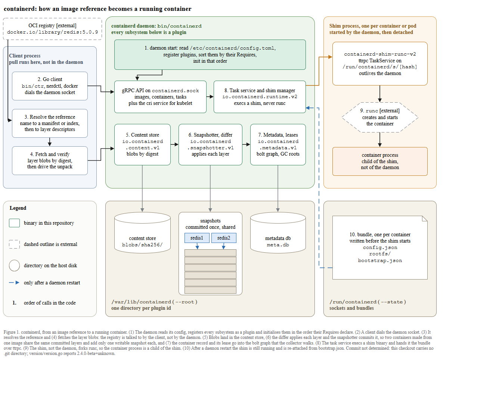
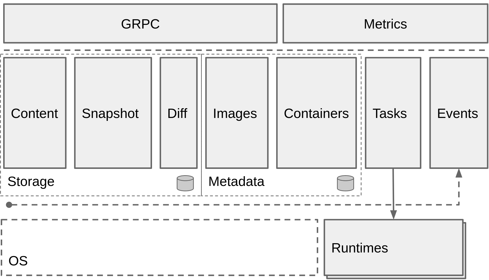

← 전체 목록 · T2-4 · T2
containerd — 흐름이 아니라 층
스킬 개발에 사용하지 않은 저장소이다. 저장소 코드만 입력으로 사용하였고, 정답지는 실행 종료 후 대조 목적으로만 열었다.
블라인드 조건
- 정답지(
containerd_fig1.png)는 실행이 끝난 뒤에만 열었다. 실행 중에는 저장소 안의 문서 산문만 읽었고 architecture.png 같은 렌더 이미지는 체크아웃에 없었다. - 커밋을 확정하지 못하였고 그 사실을 캡션에 기록하였다. 대상 폴더에
.git이 없어rev-parse --show-toplevel이 상위 paper-trail 저장소를 가리켰다. 리포트 기록:Commit: not determined, and that is in the caption.
트리에 실제로 있는version/version.go#L27의2.4.0-beta+unknown만 캡션에 넣었다. - 오염 검사를 통과하였다:
Contamination check passed — the figure is about containerd
.version/version.go=2.4.0-beta+unknown,cmd/containerd·cmd/ctr·cmd/containerd-shim-runc-v2존재를 확인하였다.
프롬프트
Scout 신규 세션에 아래 내용만 입력하였다. 무엇을 그릴지는 지정하지 않았다.
/method-figure
C:\Users\youngseolee\OneDrive - Microsoft\Desktop\work\code\paper-trail\eval\demo\sandbox\containerd
이 저장소를 읽고 이 프로젝트가 어떻게 동작하는지 보여주는 아키텍처 그림을
만들어줘.
지켜야 할 것:
- 이 저장소의 코드와 문서에서만 읽는다. 이 프로젝트의 공식 문서 사이트나
저자가 그린 아키텍처 그림을 웹에서 찾아보지 않는다. 무엇을 그릴지는
저장소가 정한다.
- 산출물은 전부 이 폴더에 쓴다:
C:\Users\youngseolee\OneDrive - Microsoft\Desktop\work\code\paper-trail\out\demo\containerd\run\
figure.drawio, fig.html, report.md,
evidence.json (evidence.py 가 뽑은 재료 원문),
render.png (최종 그림을 렌더한 PNG),
render-r1.png (독립 시각 게이트를 처음 통과시키기 전 시점의 렌더).
게이트가 한 번에 통과하면 render-r1.png 는 만들지 않아도 된다.
- report.md 에는 돌린 검사의 stdout 을 그대로 붙이고, 게이트마다 통과/실패와
몇 라운드 만에 통과했는지 적는다. 스킬에서 모호했거나 따를 수 없었던 것도
적는다.
실행 경과
캡처 프레임 137장 중 8장을 선별하였다. 좌우 방향키로 이동한다.
게이트 4종 결과
| 게이트 | 결과 | 라운드 | 검출 내용 |
|---|---|---|---|
| ① 렌더 | PASS | 1 | XML 파싱 + 뷰어 기동 (전용 포트 8913, 페이지 containerd_arch_k4.html) |
② check_layout.py | ok (엣지 18, 라벨 0) | 4 | 1라운드 16건: 캡션 넘침 + daemon start·redis1·redis2·번호 배지 1–10 이 화살표에 안 물림 + 화살표 z-order. 4라운드에 ok |
③ check_render.js | flags: [] (texts 90·shapes 35·edges 20) | 3 | 1라운드 11건: 번호 배지 10개가 상자 경계에 걸침(onborder) + 화살표 교차 1건. 배지를 상자 안 접두어로 바꾸고 교차 화살표를 삭제하였다 |
| ③-b 육안 자기점검 | 변경 3건 | 1 | 검사기가 검출하지 못한 항목을 육안으로 확인하였다: 회색 저장 화살표가 /var/lib/containerd 존 제목 글자를 관통. 도형 관통은 어떤 검사기도 검출하지 못하였다. 그 외 metadata 상자(7)의 화살표 누락, 범례 견본 2개 수정 |
| ④ 독립 시각 게이트 | GATE: PASS | 1 | A 6항목·B 6항목·C 5항목 전부 PASS. C1: zones group by process/location, not a second sequence. 층 구조를 흐름으로 표현하지 않았음을 확인하였고, 따라서 render-r1.png 는 만들지 않았다 |
심사자에게는 렌더 PNG 와 검사 원문만 제공하고 보고서·의도·단계 분해는 제공하지 않는다. 자체 점검 항목을 44개까지 확대해도 통과율이 개선되지 않아, 점검 항목이 아니라 판정 주체를 분리하는 방식으로 변경하였다.
최종 산출물
산출물은 이미지가 아니라 draw.io XML 이다. 확대·이동이 가능하며 내려받아 수정할 수 있다.
figure.drawio · report.md · 뷰어 새 창
정답지 대조


docs/historical/design/architecture.md (architecture.png / data-flow.png 참조) 저장소 자신의 아키텍처 다이어그램 (상단 GRPC·Metrics, 가운데 Storage·Metadata 플러그인 서비스, 하단 Runtimes + 점선 OS)| 항목 | 정답지 | 산출물 | 비고 |
|---|---|---|---|
| 전체 골격 | 층 다이어그램: 위 GRPC·Metrics, 가운데 플러그인 서비스 한 줄(Storage·Metadata), 아래 Runtimes + 점선 OS | 번호 1–10 의 pull→run 실행 흐름 + client·daemon·shim 프로세스 존, 아래 on-disk 디렉터리 2개 | 같은 시스템에 대한 두 가지 타당한 시점이다. 프롬프트가 '어떻게 동작하는가'를 물어 실행 흐름을 선택하였다 |
| 정렬 축 | 위아래 층으로 적층, 순서 없음 | 번호는 코드 호출 순서, 상자는 프로세스 존으로 묶임 | 번호를 유일한 순서로 두고 존은 위치로 묶어 층 구조를 존으로 보존하였다. 심사자 판정은 not a second sequence이다 |
| 플러그인 층 | Content·Snapshot·Diff(Storage) / Images·Containers(Metadata) 서비스 열 | daemon 존 안 io.containerd.content.v1·.snapshotter.v1·.metadata.v1 박스(5·6·7) | 정답지의 Storage/Metadata 열을 daemon 존 안 같은 플러그인 id 로 옮겨 층 정보를 보존하였다 |
| 런타임·OS | 아래 Runtimes 박스 + 점선 OS, Tasks→Runtimes 점선 | shim 존 + runc [external] 점선 육각형, container process child of the shim, not of the daemon | 정답지의 하단 런타임 층을 shim 존으로 표현하였다. runc 는 점선 외부 도형으로 경계를 표시하였다 |
| 클라이언트 | 없음. GRPC 가 진입점 | client 존(2·3·4), pull runs here, not in the daemon, registry 는 client 에만 연결 | 정답지가 그리지 않은 클라이언트 역할을 실행 흐름 관점에서 드러냈다 |
| 저장·스냅샷 공유 | Storage 층에 Content·Snapshot (cylinder 아이콘) | /var/lib/containerd 존에 blobs/sha256/ + redis1/redis2 가 같은 6개 커밋 스냅샷을 가리킴 | sharing drawn, not asserted. 공유를 글자 대신 화살표로 그렸다 |
| 표기·범례 | 회색 상자 층, 점선=외부(OS), cylinder=DB | 실선 둥근사각=repo 바이너리, 점선=외부, 원통/원=호스트 디렉터리 (범례 박스) | 두 그림 모두 점선=외부 규칙을 따른다. 스킬은 ⊕⊗ 특수기호를 금지하므로 도형과 번호만 사용하였다 |
| 종횡비 | 가로로 넓은 층 그림 (약 2:1) | 1160 × 960, 1.21:1 | 가독성 바닥값(본문 14px = 폭의 1.21%)이 폭을 1160 으로 제한하였다 |